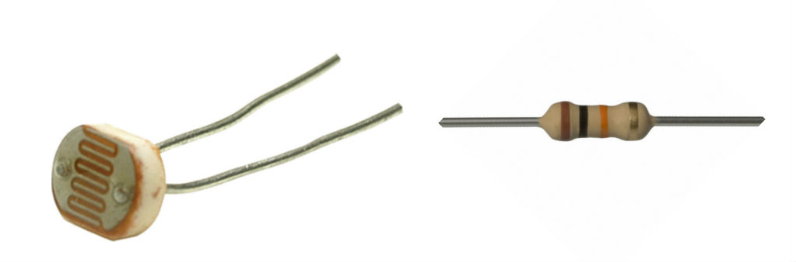
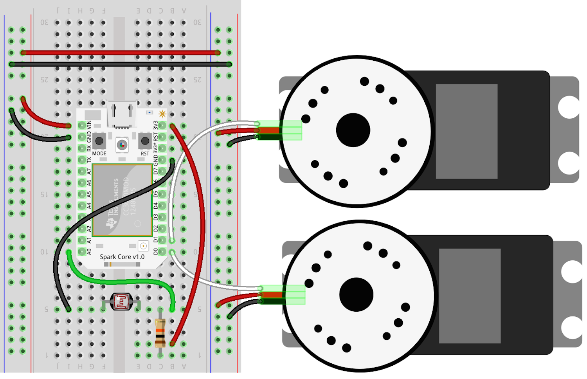

Lightbot project
This customization will add a Light Dependent Resistor (Photocell) to the front of the bot to allow controlling the bot with a light source. When light is directed at the front of the SumoBot, it will move forward; when no light is present, it will stop. This is a simple demonstration of processing analog sensor input into actuator output.
The following items can be found in the AdaFruit.com and Radioshack:

The following diagram describe the circuit layout for the controller board:

Here's the code that will run the Lightbot:
var Spark = require("spark-io");
var five = require("johnny-five");
var Sumobot = require("sumobot")(five);
var board = new five.Board({
io: new Spark({
token: process.env.SPARK_TOKEN,
deviceId: process.env.SPARK_DEVICE
})
});
board.on("ready", function() {
console.log("Welcome to Sumobot Jr: Light Bot!");
var bot = new Sumobot({
left: "D0",
right: "D1",
speed: 0.50
});
var light = new five.Sensor("A0");
// More light => higher resistance => lower ADC value
// If the reading is < 512, it's in direct light
light.booleanAt(512).on("change", function() {
bot[this.boolean ? "stop" : "fwd"]();
});
// Ensure the bot is stopped
bot.stop();
});
Don't forget, for the above code to work, you'll need to install the node modules:
npm install keypress spark-io johnny-five sumobot
Here's a video of it in action:
These instructions are adapted from Customizing the RobotsConf Sumobot with Johnny-Five by Rick Waldron, creator of Johnny Five